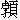

長空萬里彤雲作，迤邐祥光遍齋閣。未教柳絮舞千毬，先使梅花開數萼。入簾有韻自颼颼，點水無聲空漠漠。夜來閣向古松梢，向曉朔風吹不落。
這八句詩題雪。那雪下，相似三件物事：似鹽，似柳絮，似梨花。雪怎地似鹽？謝靈運曾有一句詩詠雪道：「撒鹽空中差可疑。」蘇東坡先生有一詞，名《江神子》：
「黃昏猶自雨纖纖，曉開簾，玉平簷。江闊天低，無處認青帘。獨坐閒吟誰伴我？呵凍手，撚衰髯。
使君留客醉懨懨，水晶鹽，為誰甜？手把梅花，東望憶陶潛。雪似古人人似雪，雖可愛，有人嫌。」
這雪又怎似柳絮？謝道韞曾有一句詠雪道：「未若柳絮因風起。」黃魯直有一詞，名《踏莎行》：
「堆積瓊花，鋪陳柳絮，曉來已沒行人路。長空尤未綻彤雲，飄颻尚逐回風舞。
對景銜杯，迎風索句，回頭卻笑無言語。為何終日未成吟？前山尚有青青處。」
又怎見得雪似梨花？李易安夫人曾道：「行人舞袖拂梨花。」晁叔用有一詞，名《臨江仙》：
「萬里彤雲密布，長空瓊色交加。飛如柳絮落泥沙。前村歸去路，舞袖拂梨花。
此際堪描何處景？江湖小艇漁家。旋斟香醞過年華。披簑乘遠興，頂笠過溪沙。」
雪似三件物事，又有三個神人掌管。那三個神人？姑射真人、周瓊姬、董雙成。周瓊姬掌管芙蓉城；董雙成掌管貯雪琉璃淨瓶，瓶內盛著數片雪；每遇彤雲密布，姑射真人用黃金箸敲出一片雪來，下一尺瑞雪。當日紫府真人安排筵會，請姑射真人、董雙成，飲得都醉。把金箸敲著琉璃淨瓶，待要唱隻曲兒，錯敲破了琉璃淨瓶，傾出雪來，當年便好大雪。曾有隻曲兒，名做《憶瑤姬》：
姑射真人，宴紫府，雙成擊破瓊苞。零珠碎玉，被蕋宮仙子，撒向空拋。乾坤皓彩中宵，海月流光色共交。向曉來，銀壓琅玕，數枝斜墜玉鞭梢。
荊山隈，碧水曲，際晚飛禽，冒寒歸去無巢。簷前為愛成簪箸，不許兒童使杖敲。待傚他當日袁安、謝女，才詞詠嘲。
姑射真人是掌雪之神。又有雪之精，是一匹白騾子，身上抖下一根毛，下一丈雪。卻有個神仙是洪厓先生管著，用葫蘆兒盛著白騾子。赴罷紫府真人會，飲得酒醉，把葫蘆塞得不牢，走了白騾子，卻在番人界裡退毛。洪厓先生因走了白騾子，下了一陣大雪。且說一個官人，因雪中走了一匹白馬，變成一件蹊蹺神仙的事，舉家白日上昇，至今古跡尚存。
蕭梁武帝普通六年，冬十二月，有個諫議大夫姓韋，名恕，因諫蕭梁武帝奉持釋教得罪，貶在滋生駟馬監做判院。這官人：
中心正直，秉氣剛強。有回天轉日之言，懷逐佞去邪之見。
這韋官人受得滋生駟馬監判院，這座監，在真州六合縣界上。蕭梁武帝有一匹白馬，名作「照殿玉獅子」：
蹄如玉削，體若瓊妝。盪胷一片粉鋪成，擺尾萬條銀縷散。能馳能載，走得千里程途；不喘不嘶，跳過三重闊澗。渾似狻猊生世上，恰如白澤下人間。
這匹白馬，因為蕭梁武帝追趕達摩禪師，到今時長蘆界上有失，罰下在滋生駟馬監，教牧養。
當日大雪下，早晨起來，只見押槽來稟覆韋諫議道：「有件禍事！昨夜就槽頭不見了那照殿玉獅子。」諕得韋諫議慌忙叫將一監養馬人來，卻是如何計結？就中一個押槽出來道：「這匹馬容易尋，只看他雪中腳跡，便知著落。」韋諫議道：「說得是。」即時差人隨著押槽，尋馬腳跡。迤邐間行了數里田地，雪中見一座花園，但見：
粉妝臺榭，瓊鎖亭軒。兩邊斜壓玉欄杆，一徑平鉤銀綬帶。太湖石陷，恍疑鹽虎深埋；松柏枝盤，好似玉龍高聳。逕裡草枯難辨色，亭前梅綻只聞香。
卻是一座籬園。押槽看著眾人道：「這匹馬在這莊裡。」即時敲莊門，見一個老兒出來。押槽相揖道：「借問則個。昨夜雪中滋生駟馬監裡，走了一匹白馬。這匹白馬是梁皇帝騎的御馬，名喚做『照殿玉獅子』。看這腳跡時，卻正跳入籬園內來。老丈若還收得之時，卻教諫議自備錢酒相謝。」老兒聽得，道：「不妨，馬在家裡。眾人且坐，老夫請你們食件物事了去。」眾人坐定，只見大伯子去到籬園根中，去那雪裡面，用手取出一個甜瓜來。看這瓜時，真個是：
綠葉和根嫩，黃花向頂開。香從辛裡得，甜向苦中來。
那甜瓜藤蔓枝葉都在上面。眾人心中道：「莫是大伯子收下的？」看那瓜，顏色又新鮮。大伯取一把刀兒，削了瓜皮，打開瓜頂，一陣異氣噴人。請眾人吃了一個瓜，又再去雪中取出三個瓜來，道：「你們做老拙傳話諫議，道張公教送這瓜來。」眾人接了甜瓜。大伯從籬園後地，牽出這匹白馬來，還了押槽。押槽攏了馬兒，謝了公公，眾人都回滋生駟馬監。見韋諫議，道：「可煞作怪！大雪中如何種得這甜瓜？」即時請出恭人來，和這十八歲的小娘子都出來，打開這瓜，合家大小都食了。恭人道：「卻罪過這老兒，與我收得馬，又送瓜來，著個甚道理謝他？」
撚指過了兩月，至次年春半，景色清明。恭人道：「今日天色晴和，好去謝那送瓜的張公，謝他收得馬。」諫議即時教安排酒樽食壘，暖盪撩鍋，辦幾件食次，叫出十八歲女兒來，道：「我今日去謝張公，一就帶你母子去遊翫閒走則個。」諫議乘著馬，隨兩乘轎子，來到張公門前，使人請出張公來。大伯連忙出來唱喏。恭人道：「前日相勞你收下馬，今目諫議置酒，特來相謝。」就草堂上鋪陳酒器，擺列杯盤，請張公同坐。大伯再三推辭，掇條凳子，橫頭坐地。酒至三杯，恭人問張公道：「公公貴壽？」大伯言：「老拙年已八十歲。」恭人又問：「公公幾口？」大伯道：「孑然一身。」恭人說：「公公，也少不得個婆婆相伴。」大伯應道：「便是沒恁麼巧頭腦。」恭人道：「也是。說個七十來歲的婆婆？」大伯道：「年紀須老。道不得百歲光陰如撚指，人生七十古來稀。」恭人道：「也是。說一個六十來歲的？」大伯道：「老也。月過十五光明少，人到中年萬事休。」恭人道：「也是。說一個五十來歲的？」大伯又道：「老也。三十不榮，四十不富，五十看看尋死路。」恭人忍不得，自道：「看我取笑他。」「公公，說個三十來歲的？」大伯道：「老也。」恭人說：「公公，如今要說幾歲的？」大伯擡起身來，指定十八歲小娘子道：「若得此女以為匹配，足矣。」韋諫議當時聽得說，怒從心上起，惡向膽邊生，卻不聽他說話，叫那當直的都來，要打那大伯。恭人道：「使不得。特地來謝他，卻如何打他？這大伯年紀老，說話顛狂，只莫管他。」收拾了酒器自歸去。
話裡卻說張公，一併三日不開門。六合縣裡有兩個撲花的，一個喚做王三，一個喚做趙四，各把著大蒲簍來，尋張公打花。見他不開門，敲門叫他。見大伯一行說話，一行咳嗽，一似害癆病相思，氣絲絲地。怎見得？曾有一《夜遊宮》詞：
四百四病人皆有，只有相思難受。不疼不痛在心頭，魆魆教人瘦。
愁逢花前月下，最怕黃昏時候。心頭一陣癢將來，一兩聲咳嗽、咳嗽。
看那大伯時，喉嚨啞颯颯地出來道：「罪過你們來，這兩日不歡。要花時，打些個去，不要你錢。有件事相煩你兩個：與我去尋兩個媒人婆子，若尋得來時，相贈二百足錢，自買一角酒吃。」二人打花了自去。一時之間，尋得兩個媒人來。這兩個媒人：
開言成匹配，舉口合和諧。掌人間鳳隻鸞孤，管宇宙孤眠獨宿。折莫三重門戶，選甚十二樓中？男兒下惠也生心，女子麻姑須動意。傳言玉女，用機關把手拖來；侍香金童，下說辭攔腰抱住。引得巫山偷漢子，唆教織女害相思。
叫得兩個媒婆來，和公公廝叫。張公道：「有頭親，相煩說則個。這頭親曾相見，則是難說。先各與你三兩銀子，若討得回報，各人又與你五兩銀子；說得成時，教你兩人撰個小小富貴。」張媒、李媒便問：「公公要說誰家小娘子？」張公道：「滋生駟馬監裡韋諫議有個女兒，年紀一十八歲，相煩你們去與我說則個。」兩個媒婆含著笑，笑接了三兩銀子出去。行半里田地，到一個土坡上，張媒看著李媒道：「怎地去韋諫議宅裡說？」張媒道：「容易！我兩人先買一角酒吃，教臉上紅拂拂地，走去韋諫議門前旋一遭，回去說與大伯，只道說了，還未有回報。」道猶未了，則聽得叫道：「且不得去！」回頭看時，卻是那張公趕來，說道：「我猜你兩個買一角酒，吃得臉上紅拂拂地，韋諫議門前旋一遭回來，說與我道未有回報。還是恁地麼？你如今要得好，急速便去，千萬討回報。」兩個媒人見張公恁地說道，做著只得去。
兩人同到滋生駟馬監，倩人傳報與韋諫議。諫議道：「教入來。」張媒、李媒見了，諫議道：「你兩人莫是來說親麼？」兩個媒人笑嘻嘻的，怕得開口。韋諫議道：「我有個大的兒子，二十二歲，見隨王僧辯征北，不在家中；有個女兒，一十八歲，清官家貧，無錢嫁人。」兩個媒人則在堦下拜，不敢說。韋諫議道：「不須多拜，有事但說。」張媒道：「有件事，欲待不說，為他六兩銀；欲待說，恐激惱諫議，又有些個好笑。」韋諫議問：「如何？」張媒道：「種瓜的張老，沒來歷，今日使人來叫老媳婦兩人，要說諫議的小娘子。得他六兩銀子，見在這裡。」懷中取出那銀子，教諫議看，道：「諫議周全時，得這銀；若不週全，只得還他。」諫議道：「大伯子莫是風？我女兒纔十八歲，不曾要說親。如今要我如何周全你這六兩銀子？」張媒道：「他說來，只問諫議覓得回報，便得六兩銀子。」諫議聽得說，用指頭指著媒人婆道：「做我傳話那沒見識的老子：要得成親，來日辦十萬貫見錢為定禮，並要一色小錢，不要金錢准折。」教討酒來勸了媒人，發付他去。
兩個媒人拜謝了出來，到張公家，見大伯伸著

項，一似望風宿鵝。等得兩個媒人回來，道：「且坐，生受不易！」且取出十兩銀子來，安在卓上，道：「起動你們，親事圓備。」張媒問道：「如何了？」大伯道：「我丈人說，要我十萬貫錢為定禮，並要小錢，方可成親。」兩個媒人道：「猜著了，果是諫議恁地說。公公，你卻如何對副？」那大伯取出一掇酒來開了，安在卓子上，請兩個媒人各吃了四盞。將這媒人轉屋山頭邊來，指著道：「你看！」兩個媒人用五輪八光左右兩點瞳人，打一看時，只見屋山頭堆垛著一便價十萬貫小錢兒。道：「你們看，先準備在此了。」只就當日，教那兩個媒人先去回報諫議，然後發這錢來。媒人自去了。這裡安排車仗，從裡面叫出幾個人來，都著紫衫，盡戴花紅銀揲子，推數輛太平車：
平川如雷吼，曠野似潮奔。猜疑地震天搖，彷彿星移日轉。初觀形象，似秦皇塞海鬼驅山；乍見威儀，若夏奡行舟臨陸地。滿川寒雁叫，一隊錦雞鳴。
車上旗兒插著，寫道：「張公納韋諫議宅財禮。」眾人推著車子，來到諫議宅前，喝起三聲喏來，排著兩行車子，使人入去，報與韋諫議。諫議出來看了車子，開著口則合不得。使人入去，說與恭人：「卻怎地對副？」恭人道：「你不合勒他討十萬貫見錢。不知這大伯如今那裡擘劃將來？待不成親，是言而無信；待與他成親，豈有衣冠女子，嫁一園叟乎？」夫妻二人倒斷不下。恭人道：「且叫將十八歲女兒前來，問這事卻是如何。」女孩兒懷中取出一個錦囊來。原來這女子七歲時，不會說話。一日，忽然間道出四句言語來：
「天意豈人知？應於南楚畿。寒灰熱如火，枯楊再生稊。」
自此後便會行文，改名文女。當時著錦囊盛了這首詩，收十二年。今日將來教爹爹看道：「雖然張公年紀老，恐是天意，卻也不見得。」恭人見女兒肯，又見他果有十萬貫錢，此必是奇異之人。無計奈何，只得成親。揀吉日良辰，做起親來。張公喜歡。正是：
旱蓮得雨重生藕，枯木無芽再遇春。
做成了親事，捲帳回，帶那兒女歸去了。韋諫議戒約家人，不許一人去張公家去。
普通七年，夏六月間，諫議的兒子，姓韋，名義方，文武雙全，因隨王僧辯北征回歸，到六合縣。當日天氣熱，怎見得？
萬里無雲駕六龍，千林不放鳥飛空。地燃石裂江湖沸，不見南來一點風。
相次到家中。只見路傍籬園裡，有個婦女，頭髮蓬鬆，腰繫青布裙兒，腳下拖雙靸鞋，在門前賣瓜。這瓜：
西園摘處香和露，洗盡南軒暑。莫嫌坐上適無蠅，只恐怕寒，難近玉壺冰。
井花浮翠金盆小，午夢初回了。詩翁自是不歸來，不是青門，無地可移栽。
韋義方覺走得渴，向前要買個瓜吃。擡頭一覷，猛叫一聲道：「文女！你如何在這裡？」文女叫：「哥哥！我爹爹嫁我在這裡。」韋義方道：「我路上聽得人說道，爹爹得十萬貫錢，把你賣與賣瓜人張公，卻是如何？」那文女把那前面的來歷，對著韋義方從頭說一遍。韋義方道：「我如今要與他相見，如何？」文女道：「哥哥，要見張公，你且少待。我先去說一聲，卻相見。」文女移身，已挺腳步入去房裡，說與張公。復身出來道：「張公道你性如烈火，意若飄風，不肯教你相見。哥哥，如今要相見卻不妨，只是勿生惡意。」說罷，文女引義方入去相見。大伯即時抹著腰出來。韋義方見了，道：「卻不尀耐！恁麼模樣，卻有十萬貫錢娶我妹子，必是妖人。」一會子掣出太阿寶劍，覷著張公，劈頭便剁將下去。只見劍靶掿在手裡，劍卻折做數段。張公道：「可惜！又減了一個神仙。」文女推那哥哥出來，道：「教你勿生惡意，如何把劍剁他？」韋義方歸到家中，參拜了爹爹、媽媽，便問：「如何將文女嫁與張公？」韋諫議道：「這大伯是個作怪人。」韋義方道：「我也疑他：把劍剁他不著，到壞了我一把劍。」
次日早，韋義方起來，洗漱罷，繫裹停當，向爹爹、媽媽道：「我今日定要取這妹子歸來。若取不得這妹子，定不歸來見爹爹、媽媽。」相辭了，帶著兩個當直，行到張公住處，但見平原曠口，蹤跡荒涼。問那當方住的人，道：「是有個張公，在這裡種瓜，住二十來年。昨夜一陣烏風猛雨，今日不知所在。」韋義方大驚！擡頭只見樹上削起樹皮，寫著四句詩道：
「兩枚篋袋世間無，盛盡瓜園及草廬。要識老夫居止處，桃花莊上樂天居。」
韋義方讀罷了書，教當直四下搜尋。當直回來報道：「張公騎匹蹇驢，小娘子也騎著匹蹇驢兒，帶著兩枚篋袋，取真州路上而去。」韋義方和當直三人，一路趕上，則見路上人都道：「見大伯騎著蹇驢，女孩兒也騎驢兒。那小娘子不肯去，哭告大伯道：『教我歸去相辭爹媽。』那大伯把一條杖兒在手中，一路上打將這女孩兒去。好恓惶人！令人不忍見。」韋義方聽得說，兩條忿氣，從腳板灌到頂門；心上一把無明火，高三千丈，按捺不下。帶著當直，迤邐去趕。約莫去不得數十里，則是趕不上。直趕到瓜州渡口，人道見他方過江去。韋義方教討船渡江。直趕到茅山腳下。問人時，道他兩個上茅山去。韋義方吩咐了當直，寄下行李，放客店中了，自趕上山去。
行了半日，那裡見得桃花莊？正行之次，見一條大溪攔路，但見：
寒溪湛湛，流水冷冷。照人清影澈冰壺，極目浪花番瑞雪。垂楊掩映長堤岸，世俗行人絕往來。
韋義方到溪邊，自思量道：「趕了許多路，取不得妹子歸去，怎地見得爹爹、媽媽？不如跳在溪水裡死休。」遲疑之間，著眼看時，則見溪邊石壁上，一道瀑布泉流將下來，有數片桃花，浮在水面上。韋義方道：「如今是六月，怎得桃花片來？上面莫是桃花莊，我那妹夫張公住處？」則聽得溪對岸一聲哨笛兒響，看時，見一個牧童騎著蹇驢，在那裡吹這哨笛兒。但見：
濃綠成陰古渡頭，牧童橫笛倒騎牛。笛中一曲《昇平樂》，喚起離人萬種愁。
牧童近溪邊來，叫一聲：「來者莫是韋義方？」義方應道：「某便是。」牧童說：「奉張真人法旨，教請舅舅過來。」牧童教蹇驢渡水，令韋官人坐在驢背渡過溪去。牧童引路，到一所莊院。怎見得？有《臨江仙》為證：
快活無過莊家好，竹籬茅舍清幽。春耕夏種及秋收，冬間觀瑞雪，醉倒被蒙頭。
門外多栽榆柳樹，楊花落滿溪頭。絕無閒悶與閒愁，笑他名利客，役役市廛游。
到得莊前，小童入去。從籬園裡走出兩個朱衣吏人來，接見這韋義方，道：「張真人方治公事，未暇相待，令某等相款。」遂引到一個大四望亭子上，看這牌上寫著「翠竹亭」，但見：
茂林鬱鬱，修竹森森。翠陰遮斷屏山，密葉深茂軒檻。煙鎖幽亭仙鶴唳，雲迷深谷野猿啼。
亭子上鋪陳酒器，四下裡都種夭桃豔杏，異卉奇葩，簇著這座亭子。朱衣吏人與義方就席飲宴。義方欲待問張公是何等人，被朱衣人連勸數杯，則問不得。及至筵散，朱衣相辭自去，獨留韋義方在翠竹軒，只教少待。
韋義方等待多時無信，移步下亭子來。正行之間，在花木之外，見一座殿屋，裡面有人說話聲。韋義方把舌頭舔開朱紅球路亭隔看時，但見：
朱欄玉砌，峻宇彫牆。雲屏與珠箔齊開，寶殿共瓊樓對峙。靈芝叢畔，青鸞彩鳳交飛；琪樹陰中，白鹿玄猿並立。玉女金童排左右，祥煙瑞氣散氤氳。
見這張公頂冠穿履，佩劍執圭，如王者之服，坐於殿上。殿下列兩行朱衣吏人，或神或鬼。兩面鐵枷，：上手枷著一個紫袍金帶的人，稱是某州城隍，因境內虎狼傷人，有失檢舉；下手枷著一個頂盔貫甲，稱是某縣山神，虎狼損害平人，部轄不前。看這張公書斷，各有罪名。韋義方就窗眼內望見，失聲叫道：「怪哉，怪哉！」殿上官吏聽得，即時差兩個黃巾力士，捉將韋義方來，驅至堦下。官吏稱韋義方不合漏泄天機，合當有罪。急得韋義方叩頭告罪。
真人正恁麼說，只見屏風後一個婦人，鳳冠霧帔，珠履長裙，轉屏風背後出來，正是義方妹子文女，跪告張公道：「告真人，念是妾親兄之面，可饒恕他。」張公道：「韋義方本合為仙，不合以劍剁吾，吾以親戚之故，不見罪。今又窺覷吾之殿宇，欲泄天機，看你妹妹面，饒你性命。我與你十萬錢，把件物事與你為照去支討。」張公移身，已挺腳步入殿裡。去不多時，取出一個舊席帽兒，付與韋義方，教往楊州開明橋下，尋開生藥鋪申公，憑此為照，取錢十萬貫。張公道：「仙凡異路，不可久留。」令吹哨笛的小童：「送韋舅乘蹇驢，出這桃花莊去。」到溪邊，小童就驢背上把韋義方一推，頭掉腳掀，攧將下去。義方如醉醒夢覺，卻在溪岸上坐地。看那懷中，有個帽兒，似夢非夢，遲疑未決。且只得攜著席帽兒，取路下山來。
回到昨所寄行李店中，尋兩個當直不見。只見店二哥出來，說道：「二十年前有個韋官，寄下行李，上茅山去擔閣。兩個當直等不得，自歸去了。如今恰好二十年，是隋煬帝大業二年。」韋義方道：「昨日纔過一日，卻是二十年！我且歸去六合縣滋生駟馬監，尋我二親。」便別了店主人。來到六合縣，問人時，都道：「二十年前，滋生駟馬監裡有個韋諫議，一十三口，白日上昇，至今昇仙臺古跡尚存。」道：「是有個直閣，去了不歸。」韋義方聽得說，仰面大哭：「二十年則一日過了，父母俱不見，一身無所歸。如今沒計奈何，且去尋申公討這十萬貫錢。」
當時從六合縣取路，迤邐直到揚州，問人尋到開明橋下，果然有個申公，開生藥鋪。韋義方來到生藥鋪前，見一個老兒，生得形容古怪，裝束清奇：
頷邊銀剪蒼髯，頭上雪堆白髮。鳶肩龜背，有如天降明星；鶴骨鬆形，好似化胡老子。多疑商嶺逃秦客，料是磻溪執釣人。
在生藥鋪裡坐。韋義方道：「老丈拜揖！這裡莫是申公生藥鋪？」公公道：「便是。」韋義方著眼看生藥鋪廚裡：
四個茖荖三個空，一個盛著西北風。
韋義方肚裡思量道：「卻那裡討十萬貫錢支與我？」且問大伯，買三文薄荷。公公道：「好薄荷！《本草》上說涼頭明目。要買幾文？」韋義方道：「回三錢。」公公道：「恰恨缺。」韋義方道：「回些個百藥煎。」公公道：「百藥煎能消酒麵，善潤咽喉。要買幾文？」韋義方道：「回三錢。」公公道：「恰恨賣盡。」韋義方道：「回些甘草。」公公道：「好甘草！性平無毒，能隨諸藥之性，解金石草木之毒，市語叫做『國老』。要買幾文？」韋義方道：「問公公回五錢。」公公道：「好教官人知，恰恨也缺。」韋義方對著公公道：「我不來買生藥，一個人傳語，是種瓜的張公。」申公道：「張公卻沒事，傳語我做甚麼？」韋義方道：「教我來討十萬貫錢。」申公道：「錢卻有，何以為照？」韋義方去懷裡摸索一和，把出蓆帽兒來。申公看著青布簾裡，叫渾家出來看。青布簾起處，見個十七八歲的女孩兒出來，道：「丈夫叫則甚？」韋義方心中道：「卻和那張公一般，愛娶後生老婆。」申公教渾家看這蓆帽兒，是也不是。女孩兒道：「前日張公騎著蹇驢兒，打門前過，蓆帽兒綻了，教我縫。當時沒皂線，我把紅線縫著頂上。」翻過來看時，果然紅線縫著頂。申公即時引韋義方入去家裡，交還十萬貫錢。韋義方得這項錢，把來修橋作路，散與貧人。
忽一日，打一個酒店前過，見個小童，騎隻驢兒。韋義方認得是當日載他過溪的，問小童道：「張公在那裡？」小童道：「見在酒店樓上，共申公飲酒。」韋義方上酒店樓上來，見申公與張公對坐，義方便拜。張公道：「我本上仙長興張古老。文女乃上天玉女，只因思凡，上帝恐被凡人點污，故令吾托此態取歸上天。韋義方本合為仙，不合殺心太重，止可受揚州城隍都土地。」道罷，用手一招，叫兩隻仙鶴。申公與張古老各乘白鶴，騰空而去。則見半空遺下一幅紙來，拂開看時，只見紙上題著八句詩，道是：
一別長興二十年，鋤瓜隱蹟暫居廛。因嗟世上凡夫眼，誰識塵中未遇仙？授職義方封土地，乘鸞文女得昇天。從今跨鶴樓前景，壯觀維揚尚儼然。
本章完!